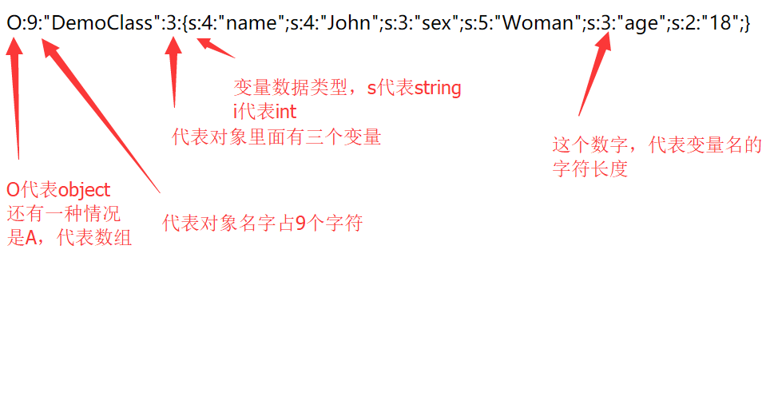

最通俗易懂的PHP反序列化分析
0x01写在前面
PHP反序列化漏洞虽然利用的条件比较苛刻，但是如果可以利用一般都会产生很严重的后果。在春招的时候很多公司都问过这个问题，说明这个反序列化漏洞的技能点也是很多公司比较关注的技能点。
可是网上的文章基本讲得比较通俗，找了很久也没有找到一篇看完能让人醍醐灌顶的文章。所以想想就自己来总结一篇吧，我觉得要了解PHP反序列化漏洞，应该从这几方面：
- 什么是反序列化
- 为什么会产生这个漏洞
- 在编程的过程中，什么时候会用到序列化这个概念
- 实例分析
0x02什么是反序列化
在我们讲PHP反序列化的时候，基本都是围绕着serialize()，unserialize()这两个函数。
那么什么是序列化呢，序列化说通俗点就是把一个对象变成可以传输的字符串。举个例子，不知道大家知不知道json格式，这就是一种序列化，有可能就是通过array序列化而来的。而反序列化就是把那串可以传输的字符串再变回对象。
直接上例子便于理解：
我们先讲一讲比较简单的序列化，我们就用序列化json来举例子吧。虽然序列化Json和我们讲PHP反序列化的漏洞没有什么关系。但是在理解序列化这个概念和之后的内容会有所帮助
- json_encode()
- json_decode()
这两个函数，一眼就能看出来是做什么用的吧，直接上例子：
这边有一个book的数组
‘book1’=>’Harry Potter’,
‘book2’=>’MR.Bean’,
‘Book3’=>’Python Cookbook’,
‘Book4’=>’History’
如果我们想传输这个数组怎么办呢，我们就可以请json_encode()这个函数帮助我们将这个数组序列化成一串字符串
所以在这里，我们将数组序列化成json格式的字串的目的就是为了方便传输。我们可以看见，这里json格式来保存数据主要是使用键值对的形式。
好啦，接下来我们要开始深入一步，来讲讲如何把一个对象序列化成一串字符串。
假设，我们写了一个class，这个class里面存有一些变量。当这个class被实例化了之后，在使用过程中里面的一些变量值发生了改变。以后在某些时候还会用到这个变量，如果我们让这个class一直不销毁，等着下一次要用它的时候再一次被调用的话，浪费系统资源。当我们写一个小型的项目可能没有太大的影响，但是随着项目的壮大，一些小问题被放大了之后就会产生很多麻烦。这个时候PHP就和我们说，你可以把这个对象序列化了，存成一个字符串，当你要用的时候再放他出来就好了。
那么，怎么才能把一个对象序列化呢？ 来，小二，上个例子：
这里，我们先创了个DemoClass，里面存了点信息，后来我们new了一个实例$example的时候，将这个class里的一些信息给改变了。
如果我们之后还要用到这个实例怎么办呢，我们就先将他序列化存起来，到时候用的时候再放出来就好啦。
是不是很简单，只要用serialize()这个函数就行了
这个时候，我们发现这次序列化出来的格式，和我们上一个序列化json的格式有点不同呢，解释一波：

然后如果反序列化回来的话
0x03为什么会产生这个漏洞?
那么，问题来了，这么序列化一下然后反序列化，为什么就能产生漏洞了呢？
这个时候，我们就要了解一下PHP里面的魔术方法了，魔法函数一般是以__开头，通常会因为某些条件而触发不用我们手动调用：
在研究反序列化漏洞的时候，碰见这几个魔法函数就要仔细研究研究了：
- __construct()当一个对象创建时被调用
- __destruct()当一个对象销毁时被调用
- __toString()当一个对象被当作一个字符串使用
- __sleep() 在对象在被序列化之前运行
- __wakeup将在序列化之后立即被调用
这些就是我们要关注的几个魔术方法了，如果服务器能够接收我们反序列化过的字符串、并且未经过滤的把其中的变量直接放进这些魔术方法里面的话，就容易造成很严重的漏洞了。
举个别人的例子：
1 |
|
这里我们只要构造payload：
http://127.0.0.1/test.php?test=O:1:"A":1:{s:4:"test";s:5:"hello";}
就能控制echo出的变量，比如你能拿这个来进行反射型xss。。。（听你扯了半天你就给我看这个）
0x04 实例分析
这里实战一题比较简单的吧
1 |
|
可以看见 先是包含了shield.php 然后从中new了个新的实例出来 最后接收用户的反序列化 输出readfile()方法
跟进：
1 |
|
这里我们可以看见只要操控$file这个参数为pctf.php就可以了，这里construct函数在实例被创建的时候(也就是new Shield()的时候)执行，所以不会影响我们对$file的操作
直接构造序列化对象传过去 O:6:”Shield”:1:{s:4:”file”;s:8:”pctf.php”;} 就行了
0x05餐后甜点
更多反序列化的漏洞分析：